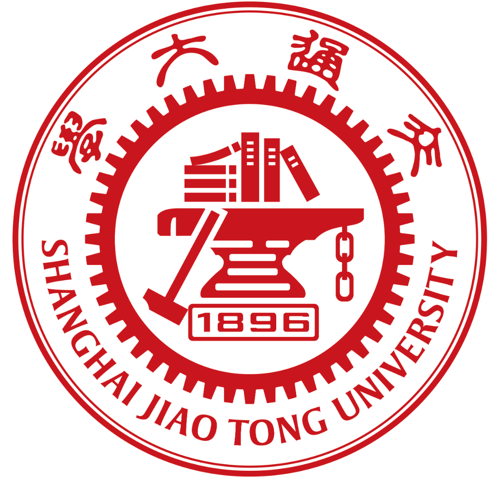

2004 年 5 月 25 日出生，江西人。本科就读于吉林大学电子科学与工程学院，2026 年进入上海交通大学攻读信息与通信工程博士学位，现为上海交通大学信息与通信工程博士研究生。
Born on May 25, 2004, from Jiangxi, China. Currently a PhD student in Information and Communication Engineering at Shanghai Jiao Tong University.
教育经历
Education

上海交通大学，信息与通信工程，博士在读（2026.09 - 至今）
依托：区域光纤通信网与新型光通信系统国家重点实验室
Shanghai Jiao Tong University, PhD in Information and Communication Engineering (Sep 2026 - Present)
Affiliation: State Key Laboratory of Advanced Optical Communication Systems and Networks
吉林大学，电子信息工程，本科（2022.09 - 2026.07）
依托：集成光电子学国家重点联合实验室（吉林大学实验区）
Jilin University, B.Eng. in Electronic Information Engineering (Sep 2022 - Jul 2026)
Affiliation: State Key Laboratory on Integrated Optoelectronics (JLU Division)
研究方向
Research Interests
大模型/智能体在光通信垂直领域的应用，重点包括：智能体自动优化链路功率、多波段容量优化、光网络运维自动化与异常诊断。
Applications of large models and intelligent agents in optical communication, focusing on automatic link power optimization, multi-band capacity optimization, optical network O&M automation, and anomaly diagnosis.
承担项目（科研、企业）
Projects (Research & Industry)
- 科研项目：S+C+L 多波段光通信系统功率优化与容量提升（核心参与）。
- 科研项目：基于大模型/智能体的光网络运维自动化与异常诊断（核心参与）。
- 企业合作：面向实际网络场景的智能体优化流程验证与部署评估（参与）。
- Research: Power optimization and capacity enhancement for S+C+L multi-band optical communication systems (core contributor).
- Research: LLM/agent-driven automation and anomaly diagnosis for optical network O&M (core contributor).
- Industry Collaboration: Validation and deployment evaluation of agent-based optimization pipelines in practical network scenarios (participant).
论文
Publications
新闻
News
- 2026.04：个人学术主页上线，并完成中英文版本。
- 2026.04：会议论文《Efficient Multi-Agent Optimization of Optical Power in S+C+L-Band Systems》被 ECOC 2026 接收。
- Apr 2026: Personal academic homepage launched with bilingual support.
- Apr 2026: Conference paper “Efficient Multi-Agent Optimization of Optical Power in S+C+L-Band Systems” was accepted by ECOC 2026.